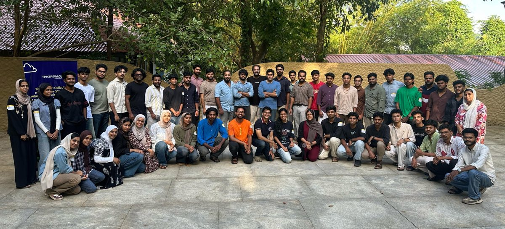

An ongoing project · Strategy by Medinn
MedTech Malabar.
Hospitals, engineering institutes and management institutes building MedTech together: a pipeline from ideation to prototyping, products and startups, for software and hardware alike.
The vision
Three kinds of institutions that rarely meet, at one table.
Malabar has hospitals with real clinical problems, engineering institutes with builders, and management institutes with people who can make ventures work. MedTech Malabar brings them together, so that a problem seen in a ward can become a product and a startup without leaving the region.
- Hospital ecosystems bring clinical problems, mentors, devices and places to pilot.
- Engineering institutes bring students, labs, makers and the skills to prototype.
- Management institutes bring business models, venture building, market access and funding know-how.
The pipeline
From a problem in the ward to a startup in Malabar.
Four stages, open to SaaS and hardware: a maintenance tracker for biomedical teams is as welcome as a new device.
Ideation
A clinical problem bank, needs-finding with the people in the wards, and ideathons.
Prototyping
Build sprints and hackathons with engineers and makers, mentored by clinicians.
Product creation
Engineering, testing and clinical validation that turn a prototype into something people can use.
Startups
Incubation, business models, funding and market access, with management institutes alongside.
The bench that feeds it
Repair cafés, deconstruction labs and hands-on biomedical training keep devices in service and teach people how equipment works and fails. They are where problems and people first meet.
Software and hardware
SaaS for hospitals, such as device maintenance tracking, and physical devices both fit. What matters is a real clinical problem and a team that can build.
Where it stands
The baseline is laid. Incubation is underway.
Calicut Medical College × TinkerSpace
The foundation: the IEDC at Government Medical College, Kozhikode, medical hackathons at TinkerSpace Calicut, and India's first medical Repair Café in October 2026.
See the Repair Café
NIT Calicut
Follow-up collaborations that bring engineering students and the Centre for Innovation, Entrepreneurship and Incubation into projects with the medical college.

Incubation with a partner hospital
The first incubation is being built with a partner hospital. We are inviting hospitals, institutes, mentors and founders to be part of it.
Be part of it
Strategy
Medinn is the strategist behind MedTech Malabar.
Dr. Sidharth Narayanan leads the strategy: bringing the institutions together, shaping the pipeline, and designing the programmes that move a problem from the ward to a product and a startup.
Be part of it
Every side of MedTech has a place.
Hospitals
Partner for incubation: share problems, mentors, device access and pilot settings.
Engineering institutes
Bring students, labs and faculty to build prototypes for real clinical needs.
Management institutes
Help teams with business models, venture building, markets and funding.
Founders, mentors and funders
Join the pipeline as a team with an idea, a clinical or technical mentor, or a backer.
Let's build MedTech Malabar together.
Dr. Sidharth Narayanan, Medinn · medinnnetworking@gmail.com · LinkedIn